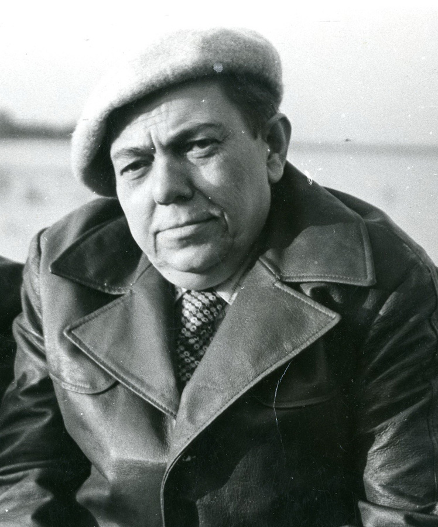
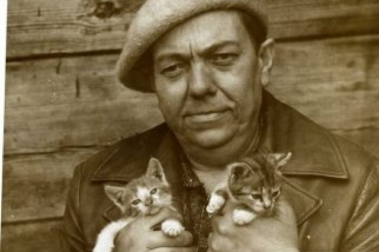
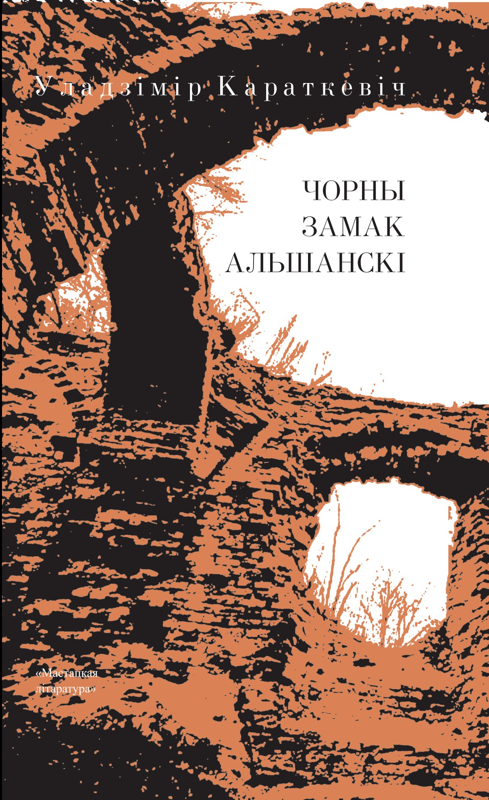

Замак Альшанскі


Вялікі ўплыў на будучага пісьменніка аказаў яго дзед па маці, Васіль Грынкевіч. Менавіта ад яго Караткевіч упершыню пачуў беларускія народныя легенды і паданні, якія пазней сталі асновай для яго твораў.
Першыя два вершы Уладзіміра Караткевіча былі апублікаваны ў 1951 годзе ў аршанскай раённай газеце «Ленінскі прызыў». Адзін з іх быў прысвечаны Якубу Коласу.
Караткевіч быў не толькі пісьменнікам. Ён выдатна маляваў (захавалася больш за 600 яго малюнкаў і накідаў), гуляў на некалькіх музычных інструментах і нават меў абсалютны слых.
Ён скончыў філалагічны факультэт Кіеўскага дзяржаўнага ўніверсітэта, а пазней вучыўся на Вышэйшых літаратурных і сцэнарных курсах у Маскве.
Караткевіч стаў першым беларускім пісьменнікам, які звярнуўся да жанру гістарычнага дэтэктыву. Менавіта ён напісаў «Дзікае паляванне караля Стаха» і «Чорны замак Альшанскі».

Гэта гістарычны дэтэктыў з элементамі містыкі і прыгод. Сам Караткевіч вызначыў яго як «раман-дэтэктыў».
У аснове сюжэта — пошукі старажытных грамат (дакументаў) роду Альшанскіх. За гэтымі паперамі палююць як сучасныя злачынцы, так і прывід мінулага.
Хоць галоўныя героі выдуманыя, Караткевіч апісвае рэальныя гістарычныя падзеі і мясціны. Замак Альшанскі і род князёў — мастацкі вымысел, але ён цесна пераплецены з сапраўднай гісторыяй ВКЛ.
Легенда пра замураваную князёўну Ганну-Гардзіславу — адзін з самых паэтычных і жудасных момантаў кнігі. Яе вобраз сімвалізуе трагедыю кахання і жорсткасць улады.
Па рамане быў зняты савецкі тэлефільм «Чорны замак Альшанскі» ў 1984 годзе (рэжысёр Міхаіл Пташук). Галоўную ролю выканаў Віктар Еўграфаў.
У 2024 годзе выйшла новая экранізацыя пад назвай «Чорны замак». Яна паказвае, што цікавасць да гэтай гісторыі не згасае і праз дзесяцігоддзі.